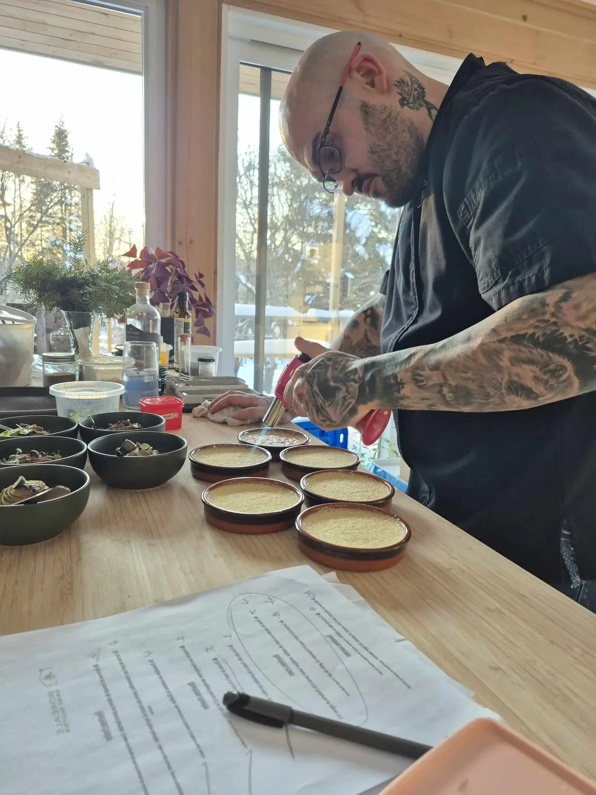
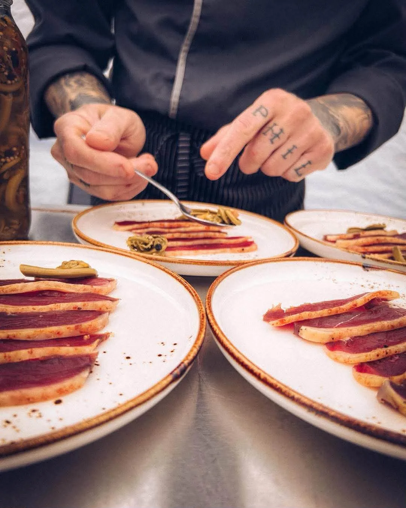

Le chef
Trois ans à raconter
le territoire dans une assiette.

Chef Phil Philippe Blais
Trois ans à faire entrer dans les maisons une cuisine née du territoire québécois. Une cuisine boréale, libre et sauvage.
Je cuisine ce qui pousse ici : ce que la forêt murmure, ce que les champs offrent et ce que les saisons décident. Chaque table devient alors un moment suspendu, un voyage au cœur du Québec vivant, brut et authentique.
Être chef à domicile, pour moi, ce n'est pas seulement cuisiner. C'est raconter le territoire dans une assiette. C'est faire goûter la forêt, la terre, le vent du Nord.
Merci à celles et ceux qui m'ouvrent leur porte depuis le début de cette aventure. Trois ans déjà. Et ce n'est que le commencement.
— Chef Phil
À compléter : parcours professionnel, formation et expériences avant Boréale sans gluten, pour étoffer cette page.
La cuisine sans gluten, une signature
Boréale sans gluten n'est pas une adaptation d'un menu classique : c'est une gastronomie pensée dès le départ sans gluten, avec les produits du territoire québécois — forêt, champs, rivières et producteurs locaux.
Envie de recevoir Chef Phil à votre table ?
Écrivez-lui pour discuter de votre événement.
Réserver une soirée →